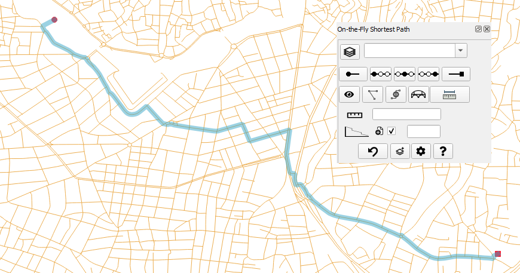
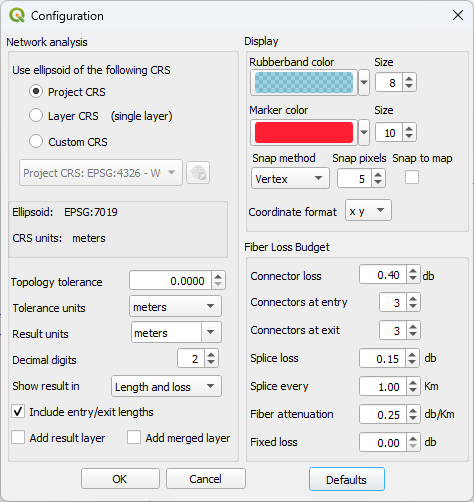
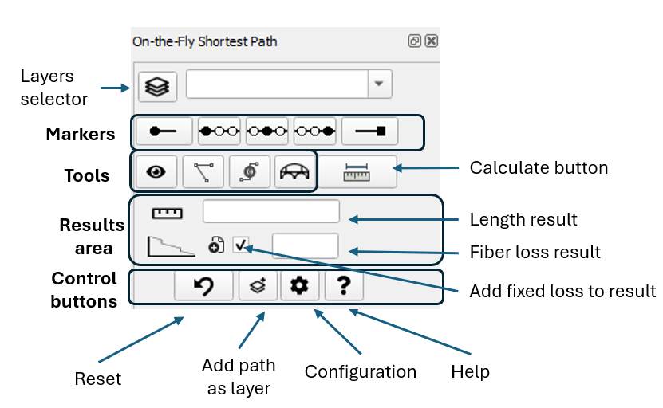
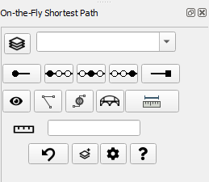
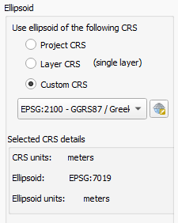
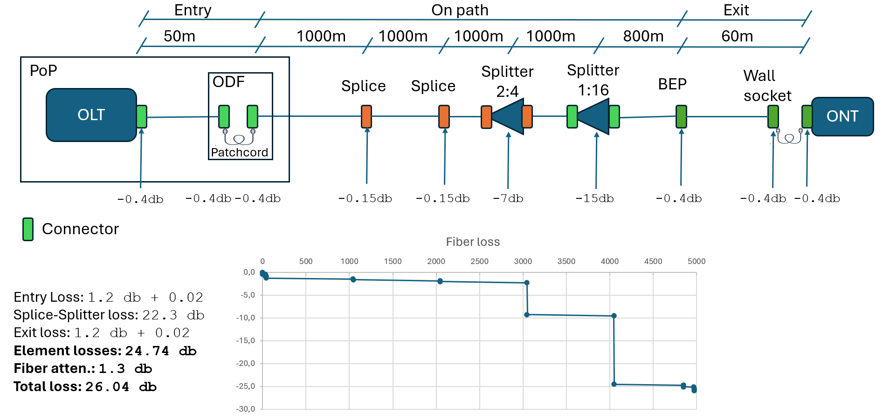

On-the-Fly Shortest Path QGIS plugin

Introduction
The “On-the-Fly Shortest Path” QGIS plugin offers an interactive measurement of distances along a line network, operating directly on the map. It calculates Distance and the Fiber Loss Budget in fiber optic networks (backbone or FTTH).
The plugin makes use of the Dijkstra algorithm of the core Network Analysis library of QGIS in order to calculate the shortest path and to measure the distance from start to end.
Subsequently, it calculates the Fiber Loss Budget of this path, considering several configured parameters (connector loss, splice loss, fiber attenuation, splitters etc.).
In contrast to similar algorithms of the Processing toolbox, this plugin does not create a new layer for every measurement but rather presents the path and the calculated parameters directly on screen, allowing for massively continuous measurements, hence the "On-the-Fly" name of this plugin. This functionality is similar to the original RoadGraph plugin of QGIS2.
In addition, the plugin allows the setting of optional middle points, forcing the path to go first from the start point to each one of the middle points and finally to the end point. This is helpful in networks with multiple paths between the start and stop point where the user wants to direct the algorithm to use a preferred path.
Quick links
Online documentation is available, containing the details of the latest release.
- Usage instructions
- Configuration parameters
- Installation
- Handling of multiple layers
- Online documentation
Support, Issues and new features
The plugin documentation can be found online in the project page.
Github registered users may report bugs in the Github issues URL. Others may send a mail to info@fryktoria.com
You can participate in the development with new ideas, using the Github discussions URL.
Installation
Install from the official QGIS plugin repository
-
From the QGIS toolbar, select
Plugins -> Manage and Install Plugins.... -
From the panel on the left side of the
Plugins|Settingswindow, selectAll. Navigate the list to locate the plugin nameOn-the-Fly Shortest Pathand pressInstall Plugin. Optionally, you can use theSearch...facility to locate the plugin by typing its nameOn-the-Fly Shortest Path.
Install from a zip file
Releases of the plugin in zip file format are available on the Releases section of Github.
-
Download the zip file containing the plugin to a directory of your choice.
-
From the QGIS toolbar, select
Plugins -> Manage and Install Plugins.... -
From the panel on the left side of the new form, select
Install from ZIP. Select the file downloaded in step 1.
After installation is complete, you should be able to see the plugin name in the list of installed plugins.
Also, to confirm that installation was made properly, from the QGIS toolbar, select View -> Panels. You should see the On-the-Fly Shortest Path in the list of panels. Activate it by clicking on the checkbox.
Build from Github sources
Follow these instructions if you want to create manually a zip file to install into QGIS using the process described in the Install from a zip file section.
- Download all files from Github
- Create a directory named
On-the-Fly-Shortest-Pathand move all files to this directory - Use your favorite compression tools to create a zip file which contains the directory and not the individual files. This structure is mandatory so that the set of files is understood by QGIS as a plugin.
- Install the plugin using the procedure in Installation section.
Activation
The plugin panel should be visible on the left-hand side of the QGIS screen. If you do not see it, first make sure that the plugin is activated.
-
From the QGIS toolbar, select
Plugins -> Manage and Install Plugins.... -
The window
Plugins|Settingswill open. From the panel on the left side of the window, selectInstalled. Navigate the list to locate the plugin nameOn-the-Fly Shortest Path. Activate it by clicking on the checkbox on the side of the plugin name.
Next, activate the plugin panel.
- Select
View -> Panels. You should see theOn-the-Fly Shortest Pathin the list of panels. Activate it by clicking on the checkbox. You should now see the panel, or just the name of the plugin in the lower left side of the left panel. In the later case, adjust the size of the plugin panel by dragging the top border of the panel upwards using the mouse.
Configuration
The plugin offers several user-defined options that can be set via the configuration dialog. To activate this dialog, press the Configure... button in the plugin panel. A new dialog form opens, containing parameters grouped in sections.

The new settings will be stored locally and will be available next time QGIS is started. The user may reset the settings to the factory defaults by clicking the Defaults button.
Section: Display
The Rubberband is the visual element displaying the path from the start point to the end point. You can select the desired color/opacity and size of the Rubberband.
The Markers are the visual elements showing the start, middle and end points of the shortest path analysis. You can select the desired color/opacity and size of the Markers.
Snap method option. While the user is setting the position of the markers on the map, a map tool allows the identification of map elements under the cursor. When the tool locates an element within the distance set by parameter Snap pixels, it presents a blue box that is automatically snapped to:
NoneSnapping tool is disabledVertexSnapping takes place a) at the vertices of lines, when the cursor is over a linestring and b) at points, when the cursor is over a point layer pointEdgeSnapping takes place during the entire length of lines
The Snap pixels parameter defines the minimum distance in pixels at which the tool will identify a nearby element.
The Snap to map parameter defines if the point clicked by the user will snap to the feature on the map, at the coordinates of the snapping tool. If the checkbox is not checked, the selection point will be the point on map that the user clicked, regardless of the appearance or position of the snapping tool. Please refer to the Snapping Tool section for details.
The Coordinate format may be selected from a variety of options (with or without a comma separator, xy or yx), so that they can be easily copied and pasted to other applications that require a specific format.
Section: Network Analysis
Use ellipsoid of the following CRS: Distance measurements are taken based on the ellipsoid associated with the selected CRS. This feature allows viewing the map and coordinates on one CRS and take measurements on another. The following options are provided:
Project CRS: The CRS of the project, as appears on the bottom right side of the QGIS status bar and can be modified for ‘on-the-fly’ CRS transformations is used for measurements.Layer CRS: When one single line layer is selected, the CRS of this line layer is used. Note: When multiple layers are selected, the Project CRS is used instead.Custom CRS: A custom CRS can be selected from the dropdown list. For users who work mainly on a local scale and operate several projects in an area covered by one ellipsoid, it is advised to use this option. Measurements using the ellipsoid and local datum of the custom CRS provide more accurate length results within the extents of the CRS area (e.g. a country).
After selecting the CRS, information labels regarding the ellipsoid associated with the selected CRS, as well as the units of the CRS are updated.
Topology tolerance: Set the topology tolerance to account for topological discontinuities of the line network. Setting topology tolerance to zero requires the network to having being designed with topological continuity. The crossing from a line segment to the other considers only the vertices of both lines. The topology tolerance value signifies the minimum distance between vertices of two lines that the algorithm will consider as eligible to cross. Please note that the algorithm of the QGIS Network Analysis Library presents a peculiarity that the crossing of the gap between the two lines will not take place between the nearest vertices but from the previous (or the next) vertex. The topology tolerance should be set to the minimum value that produces the desired results.
Tolerance units: Set the distance units associated with the Topology tolerance setting.
Result units: Set the type of distance units to present the result. Note: All measurements are made internally in meters. A simple conversion factor is applied.
Decimal digits: Set the number of decimal points for the displayed Length
Show result in: You can select from the following options:
Panel, Length and loss: The results of the analysis will appear in the plugin panel. The result will contain the total length, including the entry length, length on the path along the line network and the exit length.Panel, Length only: For users who are not interested in fiber calculations, these data can be hidden, both from the panel as well as from the results window.Window, length and loss: The results will appear both in the plugin panel as well as in a window that will appear on screen. This new window will contain the details of entry, on line network and exit. Only length information is shown.Window, length only: The results will appear both in the plugin panel as well as in a window. Only length data are presented. The fiber calculations, both in the panel and the result window are hidden.
Include entry/exit lengths: When checked, the path is drawn from the Start marker to the nearest point on the line, along the line and finally to the End marker. When unchecked, only the path along the line is drawn.
In Fiber loss calculations, when checked, the result includes the fiber loss from the line to the Start and End markers, such as the connector loss etc. When unchecked, only the fiber attenuation and the splice loss along the line, as well as the Fixed loss amount is calculated. Please refer to Fiber Loss Budget measurements for details.
Add result layer: When checked, the result of the analysis will create a new temporary layer. This layer contains as fields all results of the analysis.
Add merged layer: When checked, the merged layer will appear as a temporary layer. If only one single layer has been selected, no merged layer is produced since no merging takes place. WARNING: For efficient memory usage, please use this feature only when absolutely necessary, e.g. for debugging of a routing analysis. It is advised to reset it, after debugging is complete.
Section: Fiber Loss Budget
Connector loss: Set the average loss of the fiber optic connectors in use. Unit:db.
Connectors at entry: Set the number of connectors expected at the start point of the analysis. As an example, this can include the connector at the Optical Line Terminal (OLT), the connectors at the Optical Distribution Frames (ODF) etc.
Connectors at exit: Set the number of connectors expected at the end point of the analysis. As an example, this can include the connectors at the customer premises, such as the customer-side ODF and the customer Optical Network Terminal (ONT).
Splice loss: Set the average loss at every optical splice made on the fiber cable. Unit:db.
Splice every: Set the frequency of splices of the fiber optic network. Usually, a design parameter of a fiber optic network sets a splice every so many kilometers.
Fiber attenuation: Set the average attenuation of the fiber optic cables used in the network. Unit:db.
Fixed loss: This is a fixed value that is added to the loss calculations. It accounts for loss created by certain components, such as optical splitters in an FTTH network. Please note that this value is allocated only to the on-graph cost and not to the entry or exit cost.
Usage
Measurement operations are performed via the Panel.

The panel may also appear without presenting the fiber data, depending on the configuration option set in parameter Show result in of the Configuration window.

Basics
To make an analysis, follow the procedure:
-
Load in the QGIS project the layer(-s) containing the line network where the analysis of the shortest path will be made. Use the normal QGIS procedures for loading or creating projects or individual layers. Temporary layers are also supported.
-
From the plugin panel, select the desired layers for the analysis in the
Layersselector. Please note that only the layers having a line geometry will appear in the dropdown list of the layers selector. The CRS of the layers will appear enclosed in brackets. If a line layer is not associated with a CRS, it will not appear in the layer selector.Multiple layers may be selected using the selector. The analysis will use the selected layers, regardless if they are visible on the map. See Handling of multiple layers for additional information and precautions.
-
Press the
Start button. The button will appear as pressed and the cursor will change to a cross. Navigate on the map and click on the Start point of your choice.
button. The button will appear as pressed and the cursor will change to a cross. Navigate on the map and click on the Start point of your choice. -
Press the
Endbutton. The button will appear as pressed and the cursor will change to a cross (if it is not already a cross). Navigate on the map and click on the End point of your choice. -
Press the
Calculate/Measurebutton. The content of the Length box will change toProcessing...and the routing algorithm will start running. In complex networks, this may take a few seconds. After the algorithm ends, the results will appear on the results area of the Panel, as well as in separate window, if configured so. In case a path is not found, a message will appear for a few seconds on the QGIS message bar.
The Start and End markers can be placed either directly on top of the vertices of lines, on top of the segments of lines, or anywhere on the map. The routing algorithm will calculate the nearest line layer from the list of line layers selected in the plugin Layers selector, and will connect the marker to the nearest point on that line. The length of line from the marker to the line layer is referred to as the Entry or Exit respectively.
Snapping tool
In order to assist the user in the placement of the markers, a snapping indicator tool identifies the map features near the cursor while the marker placement tool is active for any of the markers (start, middle, end). The functionality depends on the configuration setting Snap method and the snapping tolerance is set in the Snap pixels parameter. When snapping is active, a tooltip is attached to the snapping indicator, presenting a comma separated list of the identified layers where the tool is snapped.
The snapping indicator appears as a blue rectangle or circle, depending on the value of the selected snap method:
- When the
Vertexoption has been selected, the snapping tool becomes a rectangle. The tool identifies the vertices of point and line layers loaded in the QGIS project. - When the
Edgeoption has been selected, the snapping tool becomes a circle. The tool identifies the line layers loaded in the QGIS project. The tool follows the virtual path of the line.
The snapping tool will identify all features within the Snap pixels tolerance. Even if the tool itself is snapped to one of many map features, the tooltip will report all layers within the tolerance. Since the tolerance is defined in pixels, the user may zoom in the map to - possibly - separate the individual map features, in case they do not coincide completely.
The tooltip feature identification functionality is extremely helpful in cases where overlapping lines of various layers do not allow the user to have an understanding of the network. Using the vertex option, the user may identify the vertices of each layer and understand points where the shortest path may cross the gap between the layers.
The placement of the marker can be set to snap to the coordinates of the snapping tool, according to user selection. This is defined by the parameter Snap to map of the Configuration window. It is suggested to use the snap method Vertex when snapping to actual physical locations, such as a point of a point layer, or the start and end vertex of a line segment.
When multiple layers are selected, the analysis will use the selected layers, regardless if they are visible on the map. Yet, in order for the snapping functionality of the map tool to work with a currently invisible layer, this layer must have been made visible at least once. In other words, if a layer has not been made visible at least once since loaded, it will not be subject to snapping and the layer name will not appear in the layer list of the tooltip.
Please refer to the Configuration section for details on setting the parameters.
Middle markers
In cases where the user would like to force the routing of the algorithm to pass from a selected point, the Middle point functionality can be used. In such case, the algorithm will calculate the shortest path from the Start marker to the Middle marker(s) and then will calculate the new shortest path from the Middle marker to the End marker. This functionality allows the manual routing of a path in a network with multiple routing options, where the user is not interested in the shortest path between the Start and End markers, but would rather like to measure a distance on a selected path.
The calculations from marker to marker are totally independent, therefore the path from any marker to the next may partially coincide with the previous path. This can be a desirable behaviour in occasions, e.g. leaving a main road for a pit stop and then return to the main road via the same return path. The user must select the location of the points in a way that the calculations will provide a usable resulting path. These middle markers could be considered as the “Stop points” or “Rest points”, i.e. go from start to end, making stops along the way. To avoid terminology conflicts with the end point of the path and the exit point of the line layer, I avoided the “stop” term and used the term “middle”, although not completely accurate!
At any time the user may press any of the Start ,
, Middle1 ,
, Middle2 , Middle3 and End buttons and set each of the markers on map. After a marker has been set, the shape of the marker button becomes more round. This signifies that a pair of coordinates are now associated with this marker. If the user decides to change the coordinates of an already set marker, first make sure that the marker button is pressed and then click on the map. The new coordinates will be now associated to the marker.
The Middle1 ,
, Middle2 , Middle3 marker buttons, are equipped with the additional functionality of re-setting themselves. If for example a middle marker has been set and the user clicks on the marker button, the marker will be deleted. This functionality does not exist for the Start and Stop marker, since they are considered the most essential parameters of the analysis. Their coordinates can easily be modified pressing the associated marker button. To delete entirely the Start or End marker, you may use the Reset button.
The routing algorithm considers a strict sequence Start -> Middle1 -> Middle2 -> Middle3 -> End of the markers. If any of the middle markers is not set, it is simply ignored. For example, if only Middle3 marker has been set, the sequence will be Start -> Middle3 -> End. This allows to set and/or clear middle markers depending on the particular use case, without requiring to modify middle markers that have been previously set. Always keep in mind that when middle markers are set, the algorithm does not really care about finding the shortest path from start to end, but rather finding the shortest path from start to the first set middle marker, then to the next middle marker etc. and finally to the end point.
Numeric marker coordinates
The numeric ccordinates of the Start and End marker appear in the Panel textboxes.
In case the user wishes to present the coordinates of all markers, the eye button presents the Marker coordinates window with the required information.
The user may see and even copy the coordinates of each marker. The coordinate format can be set in the configuration dialog. The coordinate values appear as defined by the project CRS, exactly as they are presented in the Coordinate box of the QGIS status bar.
The window can be opened and be placed on screen continuously, without interfering with the rest of the operations. The coordinates of all markers are updated in real-time, both in value as well as the coordinate format set by the Configuration dialog.
Add analysis result as a layer
If you would like to store the results of an analysis to a new layer, you can press the Add as layer button. A new temporary layer will be created. The fields of this layer contain the coordinates of all markers, along with the result data of the analysis. The format of the coordinates (x y, y x, etc.) will be the one set in the Configuration dialog. The result length units and the format of the length will also appear as set in the Configuration dialog. Please note that the coordinate format will follow the current setting of the Configuration dialog, yet the measurement format and units will be those of the measurement that is currently active.
In case the user needs to store results as layers on a continuous basis, the Add result layer parameter of the Configuration window allows creating a layer after each measurement.
Other...
Press the Reset button to hide all visual elements (markers and rubberbands) and clear the existing values for all points, as well as the previously calculated results.
When performing Fiber Loss measurements, you can decide if you would like to add the Fixed Loss amount of the Configuration dialog to the measurement. Check the Add Fixed loss amount if you want to add the amount to the result. Uncheck if you would like to have the measurement without the Fixed loss amount.
You can press the Configure button to enter the Configuration dialog. For detailed explanation of the configuration parameters, visit the Configuration section.
You can press the Help button to present the content of the help page. This is a simplified help page, without images, available when there is no internet connection. If an internet connection is available, click on the hyperlinks to gain acces to the full online documentation.
button to present the content of the help page. This is a simplified help page, without images, available when there is no internet connection. If an internet connection is available, click on the hyperlinks to gain acces to the full online documentation.
Length measurements
All distance measurements of this plugin are performed using the ellipsoidal method. The particular ellipsoid is the one that is associated with the selected Coordinate Reference System (CRS). See parameter Use ellipsoid of the following CRS of the Configuration window. The ellipsoid id will be presented just below the selected CRS.

After setting the markers and pressing the Calculate/Measure button, the results will appear in the Panel. If one of the "Window" options is set in the Show result in parameter of the Configuration window, the Results window will also appear.
If the user is not interested in Fiber Loss data and has set the Show result in parameter to present only the length, the result window will contain only the length results.
The Entry length and loss is associated with the distance from the Start marker to the nearest point of the line layer, the entry point. This entry point is calculated by the core QGIS network analysis library.
The Exit length and loss is associated with the distance from the End marker to the nearest point of the line layer, the exit point. This exit point is calculated by the core QGIS network analysis library.
The On path length and loss is associated with the path over the selected line layer, from the entry point to the exit point of the line layer, excluding the pieces of length from the start and end marker to the line layer. The Dijkstra algorithm of the core QGIS network analysis library is used to calculate the shortest path.
The measurements of the lines from the Start/End marker to the line layer, as well as the length of the path on the line layer are being made as per the active CRS of the QGIS project. The QGIS ‘on the fly’ transformation feature can be used to take measurements with different CRS. The Results window provides information regarding the CRS and ellipsoid that have been used for conducting the measurement.
NOTE: When the Include entry/exit lengths of the configuration dialog is checked, the total length from Start marker to entry point, along the line and from the exit point to End marker appears in the panel. When unchecked, only the length along the line network appears in the panel. Therefore, in the above example, when checked, the Panel will show the total length of 650.19m.
If unchecked, the Panel would show 627.88m which is the length "On path". The Results window continues to show all lengths.
Fiber Loss Budget measurements
The loss for the entry/exit path is calculated as the sum of:
-
The number of
Connectors at entryor respectivelyConnectors at exitparameter multiplied by theConnector lossparameter -
The
Splice lossparameter multiplied by the number of splices, which is calculated as the distance from the Start marker to the entry point on the line layer and respectively, from the exit point of the line layer to the End marker, divided by the theSplice everyparameter. Although not entirely accurate, neither as concept nor as value, this is an attempt to include the participation of the entry and exit lengths in the calculation of the total number of splices. -
The
Fiber attenuationparameter multiplied by the distance from the Start marker to the entry point on the line layer and respectively, from the exit point of the line layer to the End marker.
The loss along the line layer is calculated as the sum of:
-
The
Fiber attenuationparameter multiplied by the distance from the entry point to the exit point of the line layer -
The
Splice lossparameter multiplied by the number of splices, which is calculated as the distance from the entry point into the line layer until the exit point of the line layer, divided by theSplice everyparameter -
The
Fixed lossparameter, only if the checkboxAdd Fixed loss amountof the plugin panel is checked
NOTE: When the Include entry/exit lengths of the configuration dialog is checked, the total loss from Start marker, along the line and to the End marker appears in the panel. When unchecked, only the loss along the line (attenuation and splice loss) plus the Fixed loss appears in the panel. In the unchecked case, connector losses and fiber attenuation due to the distance of the Start and End markers from the line, is not included in the result value presented in the panel. Yet, the individual losses for all three parts (entry-line-exit) will appear in the Results window.
An example of all elements participating in a fiber loss calculation for an FTTH network is presented below:

Handling of multiple layers
The plugin allows the selection of multiple layers to perform the shortest path analysis. This feature can be helpful in cases where a path is not fully contained in one layer. As an example, there may be one layer for a primary road network, another layer for the secondary road network, a third one for the tertiary road network and so on. To calculate a path from an arbitrary point to another, the user would normally have to merge all those layers and then run the shortest-path algorithm on the merged layer. The multiple layer selection of the plugin performs the layer merging automatically.
The topology tolerance functionality can also be used in order to cross topologically disconnected lines from one layer to the other. The tolerance refers to vertices of lines and not to the lines themselves. Therefore, if two lines are crossing each other, the rubberband will not jump from one line to the other. Yet, if there are vertices in each line within the topology tolerance, the rubberband will jump from one vertex to the other. This functionality may be desired in some cases, such as a secondary road passing over or under a primary road, where it is not possible to drive from one road to the other.
Use the Snapping tool in both available options (Vertex and Edge) to identify vertices and/or overlapping lines. The tooltip presents all layers within the snapping distance that have been made visible on the map for at least once.
Some precautions need to be taken when merging layers:
-
The merging of layers consumes heavily system resources (memory and CPU). In addition, calculations of the plugin are performed in Python, which is not as fast and efficient as the core QGIS language C++. Please select the minimum number of layers required for your work.
-
When multiple layers are selected, the configuration option to use an ellipsoid based on
Layer CRSwill not work. Since several layers are concerned and each layer may have its own CRS, the plugin selects to override ths option and to use the Project CRS. This is performed in the background and the configuration option of the Configuration dialog does not present this fact, because the user may decide later to select one single layer. In that case, theLayer CRSoption will be used, without the user having to re-visit the Configuration dialog. -
When two or more layers are selected, the plugin will be dealing with one single merged layer, consisting of all lines of the initial layers. The user should keep in mind that those layers may have not been created with the consideration that somebody will merge them. Therefore, lines of originally separate layers may cross without a connection, coincide geometrically, run in parallel at a very short distance and other situations that may visually confuse the users, if they do not have a clear view of the vertices of each line. Therefore, the result of finding a path between all those lines should be taken with a grain of salt. Especially when the Topology tolerance feature is activated, the results may be surprising. Users are advised to use layers with a strict topological association between the features of those layers. As an example, a point layer containing the common points between the line layers can help identify the points of transition from one layer to the other. A value of topology tolerance equal to zero, or the minimum possible to cope for snapping inconsistencies, is desirable in that case. Yet, cases could be found where identical coordinates of different layers may provide "bad" results. As an example, when two segments of two separate line layers have a vertex with identical coordinates, a cross will occur, even if it is not wanted or expected. In such cases, use a middle marker to direct the shortest path algorithm to another point which is common for both layers, where it is accepted to cross layers
-
User must be careful with coordinate transformations from one CRS to another, in regards to the topological association between vertices of different layers. For example, if the vertex of layer 1 has been snapped topologically to a vertex of layer 2, if layer 1 is saved to a different CRS, the same vertex of the layer 1 in the new CRS may not be topologically connected to the vertex of CRS 2. Use the topology tolerance to overcome such situations. A few millimeters will suffice.